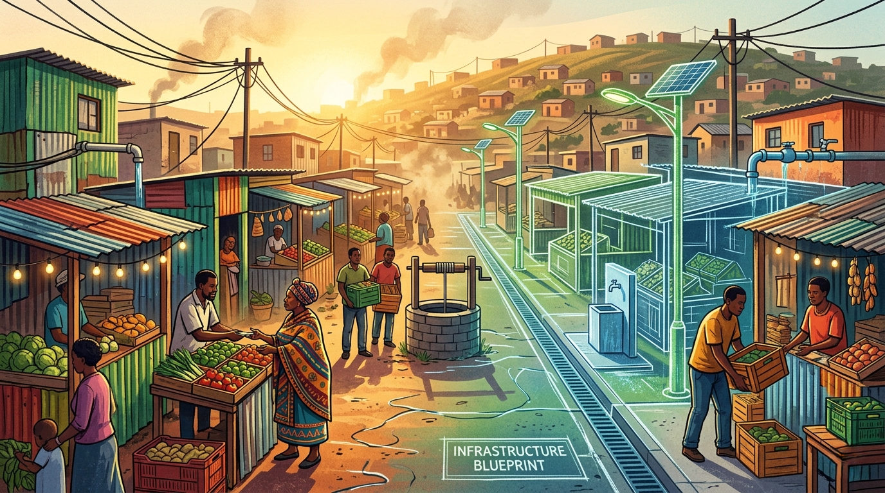

Community priorities
Start with what communities say they need.
Explore the areas Priv Philanthropy is considering. These are early concepts, not active projects or funding campaigns. No gifts are being accepted.
Priority discovery open
Giving not open

Early-stage portfolio
Explore priorities
Saved priorities are available only in this browser. Your list could not be stored between visits.
Before any giving opens: the operating entity, recipient, project partners, use of funds, local legal and tax treatment, and payment-provider approval must be confirmed. No project is currently represented as funded or underway.